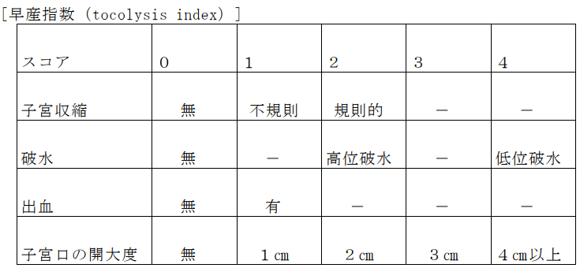

Ａ２３６－２ ハイリスク妊娠管理加算（１日につき） 1,200点
注 別に厚生労働大臣が定める施設基準に適合しているものとして地方厚生局長等に届け出た保険医療機関が、別に厚生労働大臣が定める患者（第１節の入院基本料（特別入院基本料等を除く。）又は第３節の特定入院料のうち、ハイリスク妊娠管理加算を算定できるものを現に算定している患者に限る。）について、入院中にハイリスク妊娠管理を行った場合に、１入院に限り20日を限度として所定点数に加算する。
Ａ２３６－２ ハイリスク妊娠管理加算
(１) ハイリスク妊娠管理加算の算定対象となる患者は、次に掲げる疾患等の妊婦であって、医師がハイリスク妊娠管理が必要と認めた者であること。
ア 妊娠22週から32週未満の早産の患者（早産するまでの患者に限る。）
イ 妊娠高血圧症候群重症の患者
ウ 前置胎盤（妊娠28週以降で出血等の症状を伴う場合に限る。）の患者
エ 妊娠30週未満の切迫早産の患者であって、子宮収縮、子宮出血、頸管の開大、短縮又は軟化のいずれかの兆候を示しかつ以下のいずれかを満たすものに限る。
(イ) 前期破水を合併したもの
(ロ) 羊水過多症又は羊水過少症のもの
(ハ) 経腟超音波検査で子宮頸管長が20mm未満のもの
(ニ) 切迫早産の診断で他の医療機関より搬送されたもの
(ホ) 早産指数(tocolysis index)が３点以上のもの
オ 多胎妊娠の患者
カ 子宮内胎児発育遅延の患者
キ 心疾患（治療中のものに限る。）の患者
ク 糖尿病（治療中のものに限る。）の患者
ケ 甲状腺疾患（治療中のものに限る。）の患者
コ 腎疾患（治療中のものに限る。）の患者
サ 膠原病（治療中のものに限る。）の患者
シ 特発性血小板減少性紫斑病（治療中のものに限る。）の患者
ス 白血病（治療中のものに限る。）の患者
セ 血友病（治療中のものに限る。）の患者
ソ 出血傾向のある状態（治療中のものに限る。）の患者
タ ＨＩＶ陽性の患者
チ Ｒｈ不適合の患者
ツ 当該妊娠中に帝王切開術以外の開腹手術（腹腔鏡による手術を含む。）を行った患者又は行う予定のある患者
テ 精神疾患の患者（当該保険医療機関において精神療法を実施している者又は他の保険医療機関において精神療法を実施している者であって当該保険医療機関に対して診療情報が文書により提供されているものに限る。）ただし、治療中のものとは、対象疾患について専門的治療が行われているものを指し、単なる経過観察のために年に数回程度通院しているのみの患者は算定できない。
(２) 当該加算は、１入院に20日を限度として所定点数に加算する。ただし、第２部通則５に規定する入院期間が通算される入院については、１入院として取り扱うものであること。
(３) １入院の期間中に、区分番号「Ａ２３７」ハイリスク分娩等管理加算を算定するハイリスク分娩管理又は地域連携分娩管理とハイリスク妊娠管理を併せて行うことは可能であり、ハイリスク妊娠管理加算とハイリスク分娩管理加算又は地域連携分娩管理加算を併せ、１入院当たり28日を限度として算定できるが、ハイリスク分娩管理加算又は地域連携分娩管理加算を算定する日と同一日に行うハイリスク妊娠管理に係る費用は、ハイリスク分娩管理加算又は地域連携分娩管理加算に含まれ、別に算定できない。
(４) 妊婦とは産褥婦を含まない。